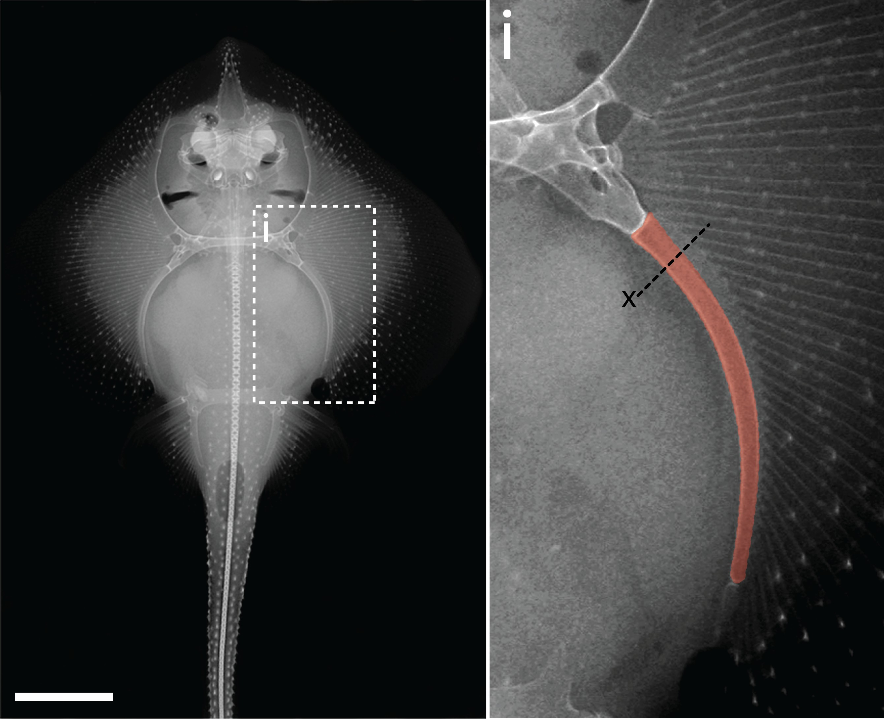

Research
I'm interested in evolutionary and developmental biology. Much of my research is about exploring how changes at the level of the genome, gene regulatory networks and developmental mechanisms during embryogenesis can affect morphological evolution of the neural crest-derived features and generate natural phenotypic diversity. Representative papers are highlighted.
|
|
|
Developmental plasticity and variability in the formation of egg-spots, a pigmentation ornament in the cichlid Astatotilapia calliptera
Bethan Clark,
Aaron Hickey,
Aleksandra Marconi,
Bettina Fischer,
Joel Elkin,
Rita Mateus,
M. Emília Santos,
Evolution and Development, 2024
paper
Our results demonstrate that A. calliptera egg-spot development is an exciting model for investigating pigment pattern formation at the cellular level in a system with developmental plasticity, sexual dimorphism, and intraspecific variation.
|
|
|
Genetic and developmental divergence in the neural crest programme between cichlid fish species
Aleksandra Marconi,
Grégoire Vernaz,
Achira Karunaratna,
Maxon J. Ngochera,
Richard Durbin,
M. Emília Santos,
Accepted at Molecular Biology and Evolution, 2024
paper
We identify expression and functional divergence between teleost-specific sox10 gene duplications and report a novel function of sox10-like in craniofacial skeletogenesis in Malawi cichlids.
|
|
|
Variation in neural crest development contributes to phenotypic diversification of East African cichlid fishes
Aleksandra Marconi,
Thesis, 2023
paper
My PhD thesis!
|
|
|
Morphological and temporal variation in early embryogenesis contributes to species divergence in Malawi cichlid fishes
Aleksandra Marconi,
Cassandra Zie Yang,
McKay Samuel,
M. Emília Santos,
Evolution & Development, 2023
paper
This work details the early development of three divergent Lake Malawi cichlids. A comparative analysis reveals anatomical and timing differences during embryogenesis and indicates divergence of species' morphologies before their overt formation.
|
|

|
Adult chondrogenesis and spontaneous cartilage repair in the skate, Leucoraja erinacea
Aleksandra Marconi,
Amy Hancock-Ronemus,
J Andrew Gillis,
eLife, 2020
paper
We identify a population of cycling Sox5/6/9+ perichondral progenitor cells that generate new cartilage during adult skate growth, and we show that persistence of chondrogenesis in adult skates correlates with ability to spontaneously repair cartilage injuries.
|
|
|
Signatures of the Evolution of Parthenogenesis and Cryptobiosis in the Genomes of Panagrolaimid Nematodes
Philipp H. Schiffer,
Etienne G.J. Danchin,
Ann M. Burnell,
Christopher J. Creevey,
Simon Wong,
Ilona Dix,
Georgina O’Mahony,
Bridget A. Culleton,
Corinne Rancurel,
Gary Stier,
Elizabeth A. Martínez-Salazar,
Aleksandra Marconi,
Urmi Trivedi,
Michael Kroiher,
Michael A.S. Thorne,
Einhard Schierenberg,
Thomas Wiehe,
Mark Blaxter,
iScience, 2019
paper
Panagrolaimid nematodes have colonized environments ranging from arid deserts to Arctic and Antarctic biomes. To identify systems that may contribute to these striking abilities, we sequenced and compared the genomes and transcriptomes of parthenogenetic and outcrossing panagrolaimid species, including cryptobionts and non-cryptobionts.
|
|
|
Dynamics of cardiomyocyte transcriptome and chromatin landscape demarcates key events of heart development
Michal Pawlak,
Katarzyna Z. Kedzierskav,
Maciej Migdal,
Karim Abu Nahia,
Jordan A. Ramilowski,
Lukasz Bugajski,
Kosuke Hashimoto,
Aleksandra Marconi,
Katarzyna Piwocka,
Piero Carninci,
Cecilia L. Winata,
Genome Research, 2019
paper
To better understand transcriptional regulatory mechanism driving heart development and the consequences of its disruption in vivo, we performed time-series analyses of the transcriptome and genome-wide chromatin accessibility in isolated cardiomyocytes (CMs) from zebrafish embryos at developmental stages corresponding to heart tube morphogenesis, looping, and maturation.
|
|
{kind=link}
{kind=link}
{kind=link}
{kind=link}
{kind=link}
{kind=link}
{kind=link}
{kind=link}